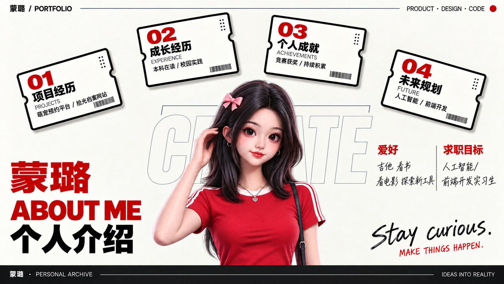
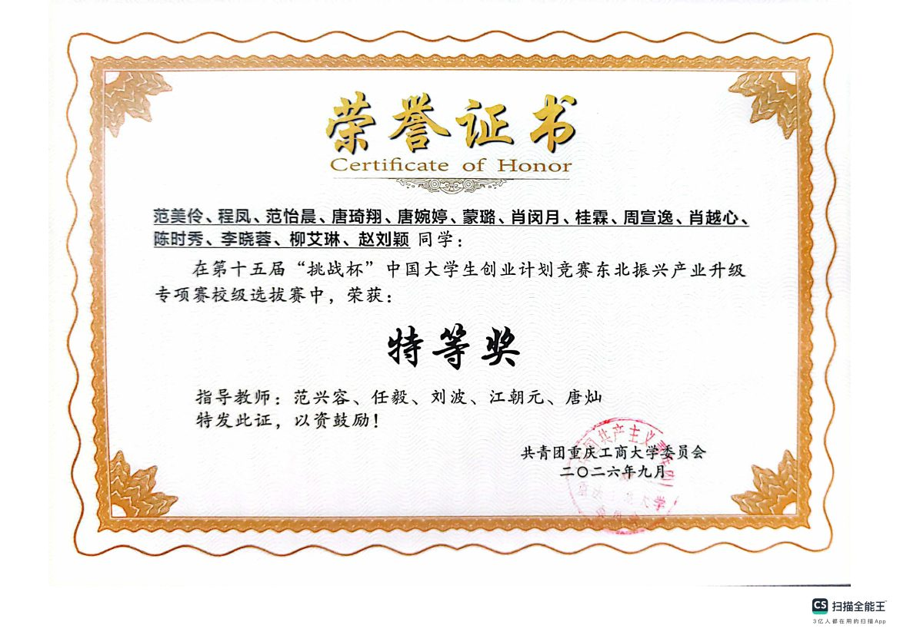
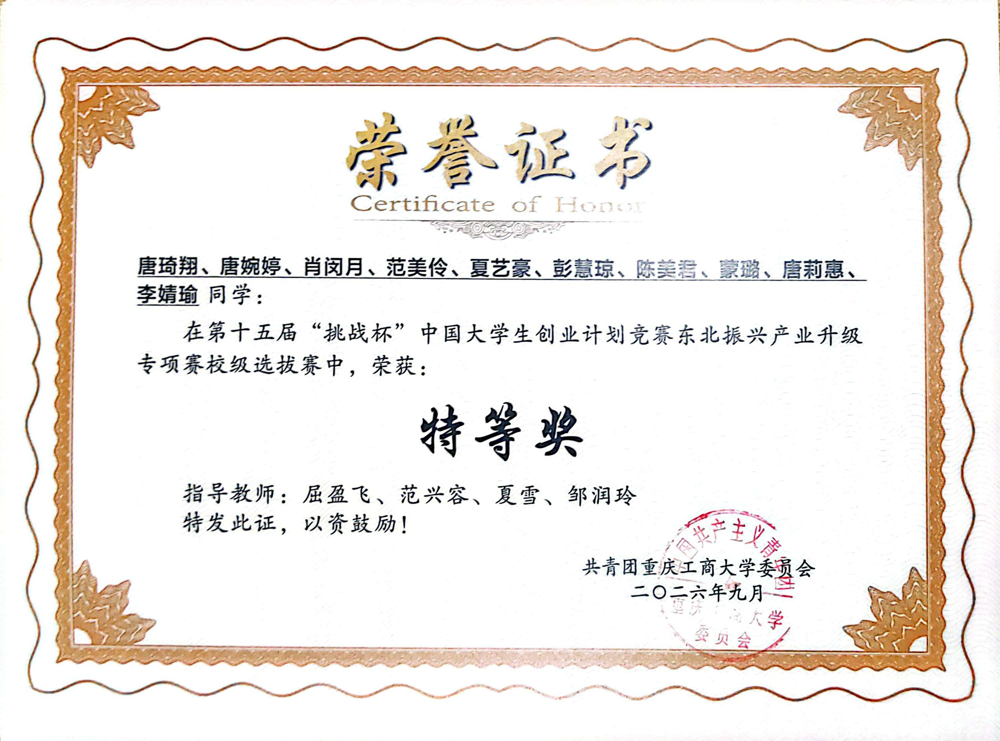
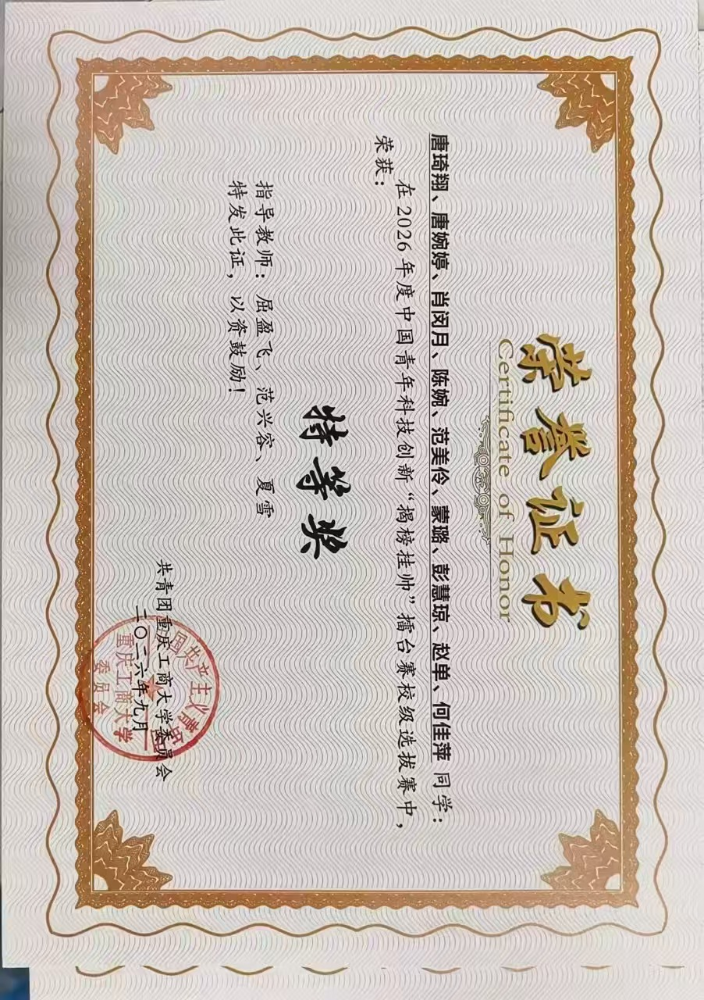
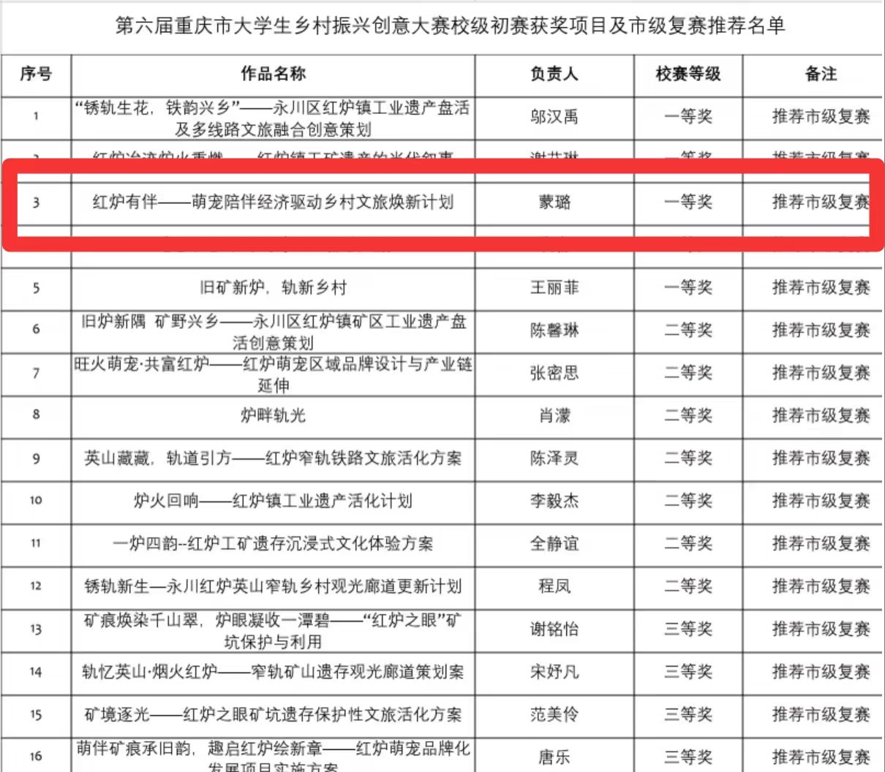

PROJECTS
EXPERIENCE
重庆工商大学大学生自主委员会
负责推文与海报制作，并参与多次学校大型文艺活动的策划和组织；在内容表达、视觉呈现与现场协作中持续积累实践经验。
重庆工商大学青队
参与多次志愿服务，并组织、参与 Web 网站、PPT 制作及 PS、PR 工具学习；在团队协作中将学习成果转化为清晰、可落地的内容表达。
ACHIEVEMENTS

2026.09 · 校级选拔赛 北域护翎 第十五届“挑战杯”中国大学生创业计划竞赛东北振兴产业升级专项赛负责核心技术逻辑呈现与答辩 PPT 修改，借助 AI 工具提炼技术路径、重构信息层级，并优化流程图、关键数据与页面叙事，最终提升了技术表达的准确性与答辩呈现效率，掌握了复杂技术的视觉化转译方法、AI 工具应用与 PowerPoint 设计。
特等奖 查看证书原件 ↗
2026.09 · 校级选拔赛 松盾科技 第十五届“挑战杯”中国大学生创业计划竞赛东北振兴产业升级专项赛参与策划书撰写与答辩 PPT 制作，梳理市场需求、产品逻辑和实施路径，并完成 Word 文档排版、内容校对与 PPT 视觉呈现，推动项目材料高质量交付，进一步提升了结构化写作与视觉表达能力，熟练掌握 Word、PowerPoint 等办公软件。
特等奖 查看证书原件 ↗
2026年度 · 校级选拔赛 松盾科技 中国青年科技创新“揭榜挂帅”擂台赛在项目深化阶段，我参与项目网站搭建及策划书迭代修改，依据项目逻辑规划页面结构并完成前端内容搭建，同时结合评审视角优化文案、论证与版式，实现从方案文本到数字化展示的有效转化，提升了前端实现、内容迭代与跨媒介协同表达能力。
特等奖 查看证书原件 ↗
第六届 · 校级初赛 红炉有伴 萌宠陪伴经济驱动乡村文旅焕新计划面对乡村振兴项目调研、商业策划与成果展示多线并行的复杂任务，我负责统筹 PPT 全局，参与策划书构思、调研问卷整理与实地调研，并完成“红炉有伴”网站搭建；通过建立统一叙事框架、提炼调研发现与用户需求，将项目亮点系统转化为策划书、路演 PPT 和交互网站，形成从田野调研、数据洞察、方案策划、视觉统筹到数字产品落地的完整闭环，提升了项目统筹、跨团队协作、信息架构与产品化表达能力。
一等奖 · 推荐市级复赛 查看获奖名单 ↗FUTURE
求职目标
持续探索